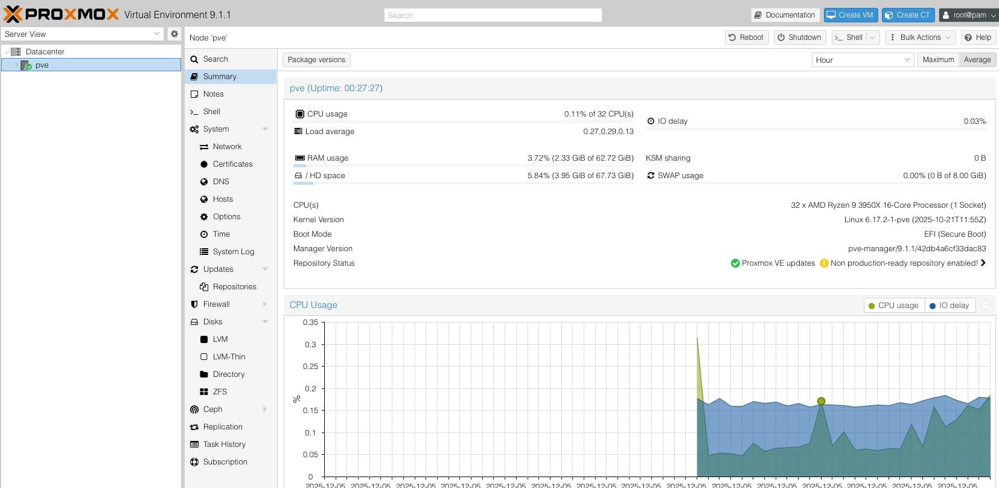
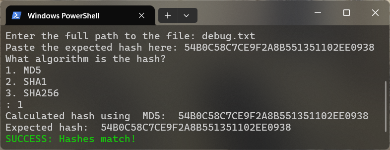

Projects
Here's some of the projects I have worked on.

JoeCorp - Initial Deployment
A self-guided exploration into on-premises Windows administration.
View Details
Remote Proxmox Server
Frustration turns to inspiration in this remote hardware deployment project.
View Details